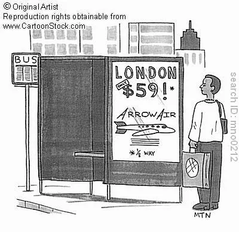

Blog · June 15, 2010
Airfare Hack: One-Way v Round-Trip
Today I booked my flight to London for TEDGlobal 2010. After tedious searching I am pressed to share thoughts on plane tickets.


Fine Print
As of June 14th, flights from Hsv to London cost $1,499.00. Peak travel season..robbery is to be expected. What struck me almost as gently as the lightness of my pocketbook is that an economy one-way flight costs more than its round-trip counterpart ($1,538.00, Delta.com). I usually only bother searching round-trip fares, but I have a Delta standby ticket expiring soon that I intended to use to promote frugality. Ha ha.
Delta has two exquisite options for Business Class as well. The first flight entices you with not one but two 3.5 hr layovers, only to be outdone by the second choice that offers a grand 8.5 hr layover in Atlanta. $3,747 and $6,500, respectively. One-way. Bloody awful.
Upgrade to round-trip Business and release from your bank account an additional $800. At $4,500, this fare is effectively two thousand dollars less than the more expensive one-way flight. What gives?
Perhaps travelers in need of custom itineraries purchase more one-way tickets and such irregularities disrupt airline schedules. “One-way fliers might need specific times and flights in a way that makes their demand more inelastic,” says an economist of the Austrian School. Professor Horowitz of St. Lawrence University adds “My own thought is that it’s a matter of not wanting an empty seat coming back the other way given the low probability of a ‘double coincidence of one-way tickets.'” Well put.
“Tomatoes are .50 each or 3 for 1.00.” With one-way airfare, you pay a premium for 1. buying less than the standard share and 2. increasing the risk that some of the product will remain shelved.
I’d like to thank those dwellers in the land of the volcano-which-cannot-be-pronounced, because I found an outlying one-way ticket to London from NYC with Iceland Express for $360. I booked a cheap round-trip flight to NY and asked Delta what happens when I fly home standby and don’t use the second leg of my flight.
“We will credit you with a voucher for the portion of the fare you are unable to use.” Really..? I see a loophole.
Example. Given airfare costs $500 one-way or $600 round-trip, even if you don’t need the return, book round. Call the airline before your extra flight departs. You receive a $250 airline credit (after, say, $50 fee), which quintessentially knocks your fare down to $350.
Jay-Z might as well have been speaking about one-way airfare when he said “I kept feedin’ her money till her shit started to make sense.” Indeed.
If you are a traveler who frequently books one-way flights, especially in Business Class, give this a go. And let me know what you think. Half credit from a $600 ticket is convenient; that from a $4,500 ticket is the next order of magnitude. Do this twice and you net a first class round-trip flight across the Atlantic. Now that is something to write home about. Or at least accounting.
First published on my old blog, amyrobinson.wordpress.com, June 15, 2010.